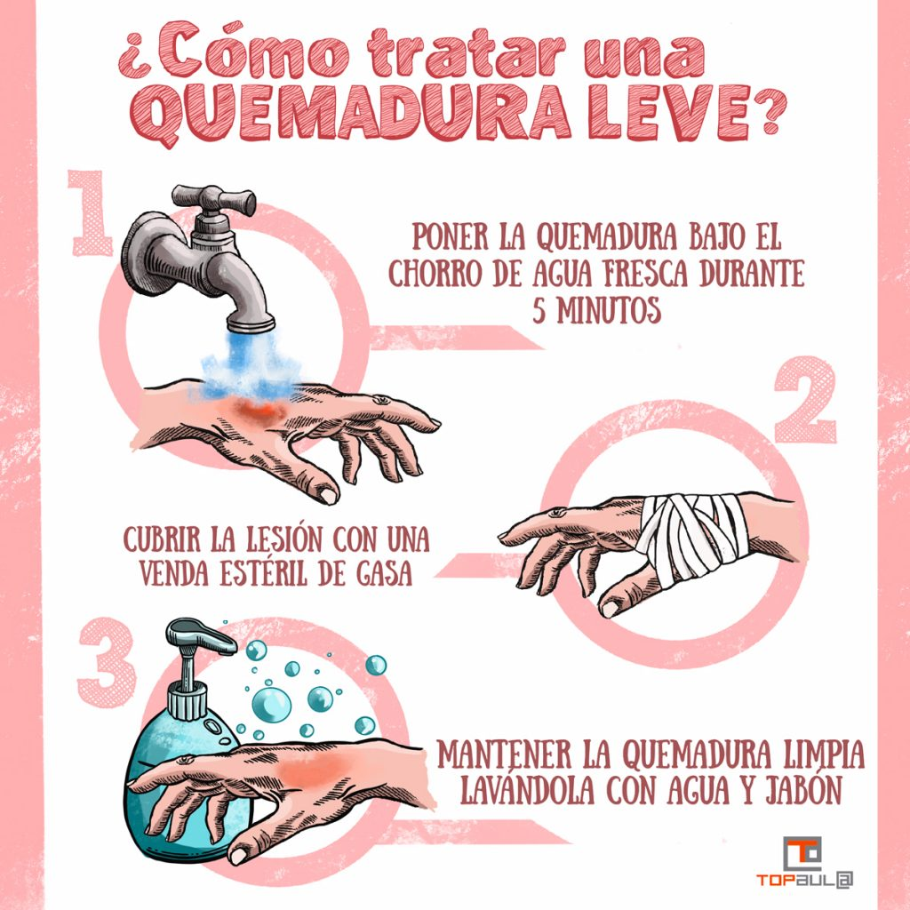

Home
Contacto

No coloque hielo, cremas, dentífrico u otras soluciones habitualmente de origen popular, pues pueden aumentar la lesión y provocar infección. En caso de tener “ampollas” no las abra.
Procedimientos para la reanimación cardiopulmonar
Maniobra de Heimlich
¿Que hacer ante una hemorragia?

 Maniobra de Heimlich
Maniobra de Heimlich